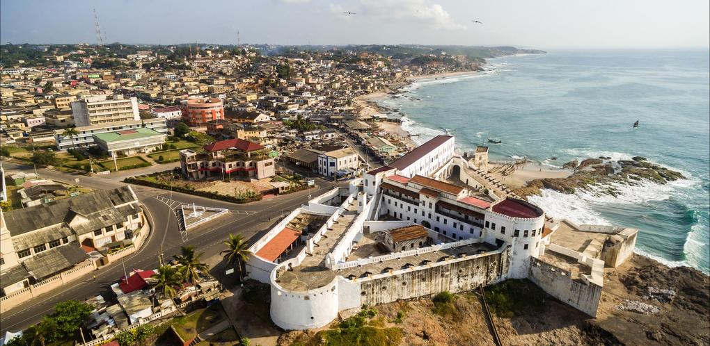

Selassie Kwabla Heloo
About Me
Hello! I am a student in the WDD 131 – Dynamic Web Fundamentals course. I am passionate about learning web development and building dynamic, responsive websites. I enjoy exploring new technologies and applying best practices in frontend development.
When I am not coding, I enjoy spending time with family, reading, and exploring the outdoors. I am excited to grow my skills in HTML, CSS, and JavaScript throughout this course.
Accra, Ghana

Ghana, known as the "Gateway to Africa," is a vibrant West African nation rich in history, culture, and natural beauty. Bordered by the Gulf of Guinea, it features diverse landscapes ranging from tropical rainforests and savannah grasslands to pristine beaches along its 560-kilometer coastline. Ghana was the first sub-Saharan African country to gain independence from colonial rule in 1957, led by the visionary Dr. Kwame Nkrumah.
From the iconic Cape Coast and Elmina Castles to the bustling markets of Accra and the serene waterfalls of the Volta Region, Ghana offers unforgettable experiences. The country is celebrated for its warm hospitality, colorful Kente cloth, rhythmic highlife music, and diverse cuisine featuring dishes like jollof rice, fufu, and banku.